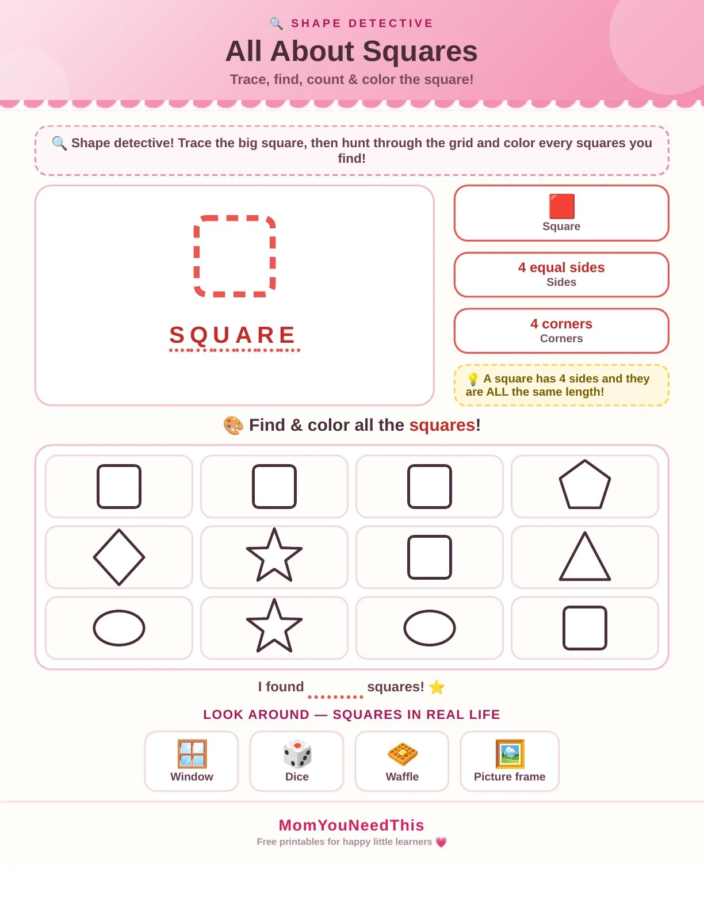

Square Activities For Kids Trace, Color & Learn All About Squares
Help your child discover squares with printable activities that build shape recognition, counting sides and corners, and early geometry confidence.
Quick Answer
This free printable square activity helps toddlers and preschoolers learn the shape with 4 perfectly equal sides and 4 corners. The worksheet includes tracing, coloring, and identification exercises sized for little hands. The square's big idea is equality: all four sides the same length is what makes a square a square — stretch two of them and it quietly becomes a rectangle. Download and print at home with no signup needed, and get ready to spot squares everywhere from windows to crackers.
At a Glance
- Ages: Toddlers and preschoolers
- Activity: Learning the square — 4 equal sides, 4 corners; tracing and coloring
- Skills: Shape recognition: square
- Format: Printable worksheet (PDF)
- Cost: Free, no signup
◼️ Learn About a Square
A square is a shape with a rule: 4 sides, all exactly the same length, joined at 4 corners. That equality rule is what this page teaches. Children usually learn “square” by its look and then call every four-sided box a square — the activities here push past the look to the test: measure the sides with a finger, and if they are all equal, it is a square.
Tracing teaches the equality in the hand: four strokes of the same length, four turns of the same corner. Coloring and the identification exercises then ask the eye to do the same checking. Finish with the home hunt — windows, crackers, sticky notes and building blocks are the classic finds, and every one of them can be finger-measured to prove it qualifies.

🖨️ Download Your Free Square Printable
Trace the square, color it in, and hunt for squares around your home. Print it out, grab the crayons, and you're ready — no signup needed.
⬇️ Download Free Printable 🖨️ Print(opens in new tab)🎁 Free printable for toddlers & preschoolers
🔍 Square Hunt Around Your Home
Turn learning into a game! Walk around your home together and spot things shaped like a square — windows, crackers, sticky notes, and building blocks. Give each find the finger test: run a finger along all four sides and ask “same, same, same, same?” A window pane passes. A door does not — it is a rectangle wearing a similar look, and catching the difference is the best part of the game.
Squares reward a second look at things kids already handle daily: cheese slices, waffle squares, floor tiles, the faces of dice, board-game squares. Count your finds, then sort them by size — the smallest square in the house versus the biggest is a lovely argument to referee.
💡 Why Learn About the Square?
The square teaches a genuinely mathematical idea in preschool form: a shape can be defined by a rule, not just recognized by a look. “Four equal sides” is a definition a four-year-old can test with a finger, and testing definitions — checking whether something qualifies — is the seed of all later geometry and logic. No other beginner shape makes the rule this easy to verify.
Squares are also the shape of grids, and grids are everywhere in a child's future: graph paper, calendars, board games, pixels on every screen. Fluency with squares and their corners supports spatial reasoning, tidy drawing (a square is the first house most children draw), and the rows-and-columns thinking that multiplication will later need.
📚 Keep Exploring Shapes
Discover more free 2D shape activities, printables, and learning ideas created for busy parents.
🎁 Back to 2D Shape Activities